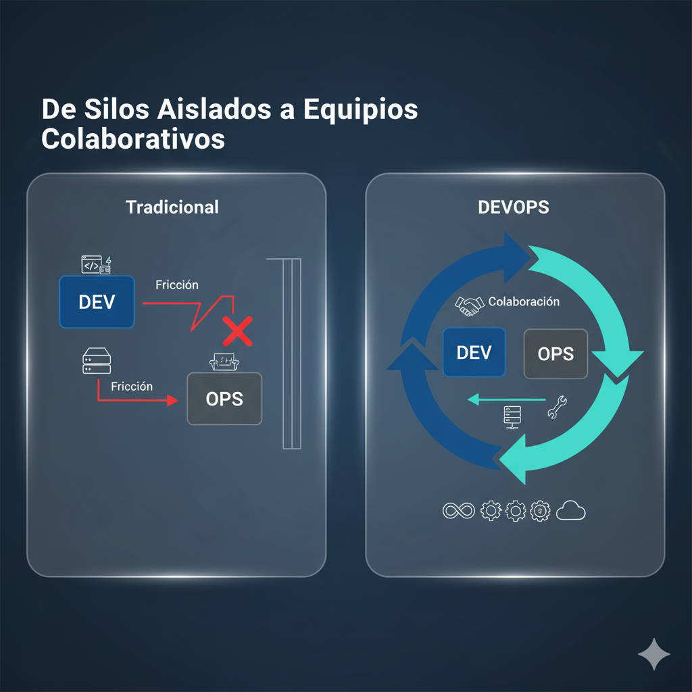
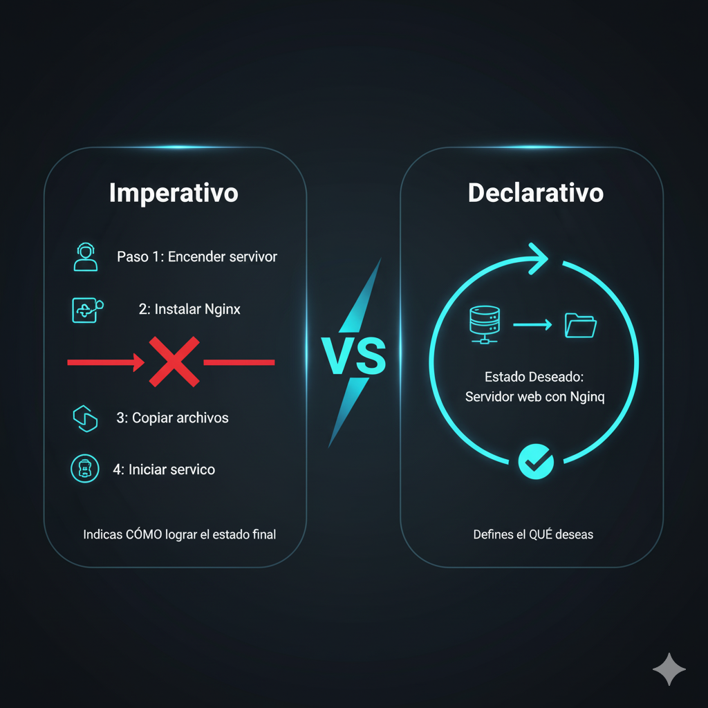
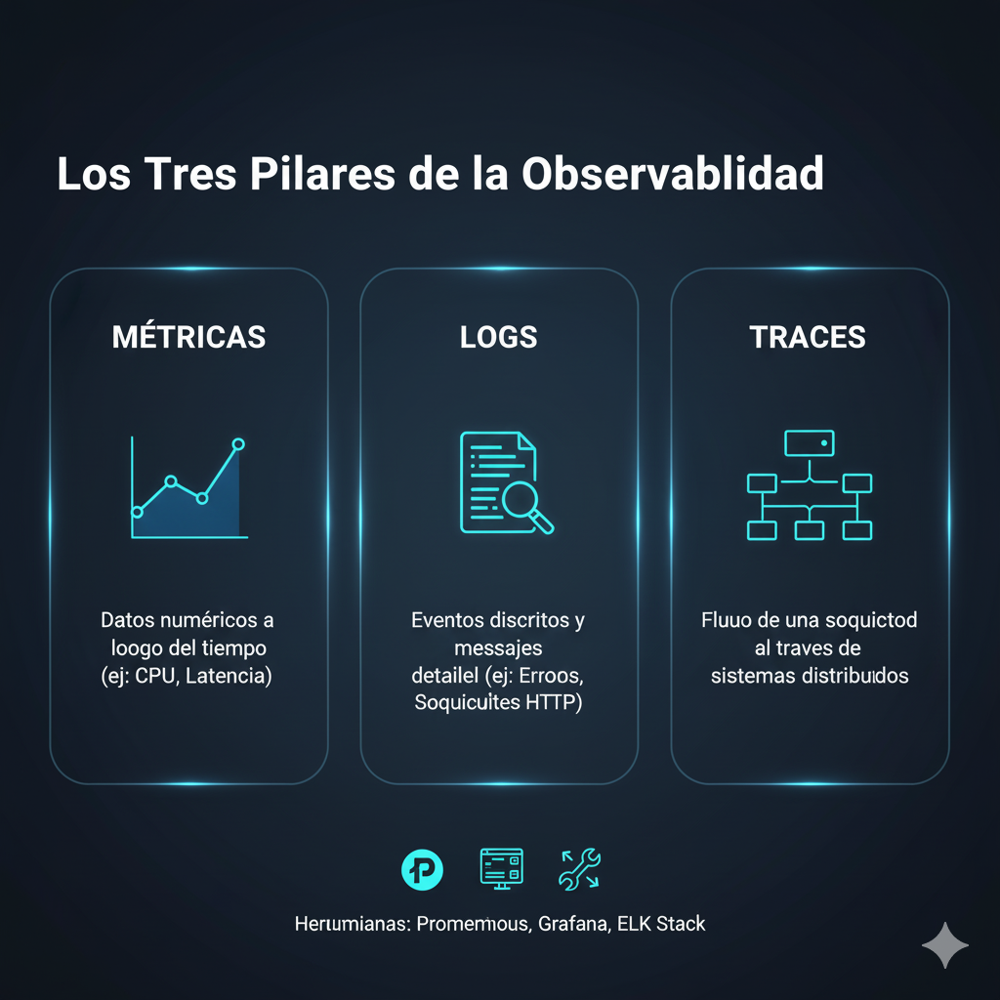

Publicado el 15 de enero, 2025
Fundamentos SRE/DevOps: Conceptos Clave para Empezar
Todo gran viaje comienza con un primer paso...
¿Qué Problema Resuelven Estas Metodologías?
Históricamente, el desarrollo de software (Dev) y la operación de sistemas (Ops) vivían en mundos separados...
 De silos aislados a equipos colaborativos.
Conceptos Clave que Debes Dominar
Para pensar como un ingeniero de SRE/DevOps, ciertos conceptos deben formar parte de tu ADN...
- Declarativo vs. Imperativo: Imagina que quieres un café...
- Idempotencia: Es una propiedad crucial para la automatización segura...
- Inmutabilidad: Este concepto, aplicado a la infraestructura, significa: "nunca modifiques un servidor en producción; reemplázalo"...
 Declaras el "qué", no el "cómo".
Buenas Prácticas para Empezar con el Pie Derecho
- Versionar todo (GitOps): Tu código de aplicación ya está en Git, ¿verdad?...
- Automatizar pruebas y despliegues (CI/CD): La Integración Continua (CI) y la Entrega Continua (CD) son el motor de DevOps...
- Observabilidad Mínima Viable: No puedes mejorar lo que no puedes medir...
 Los tres pilares para entender tu sistema.